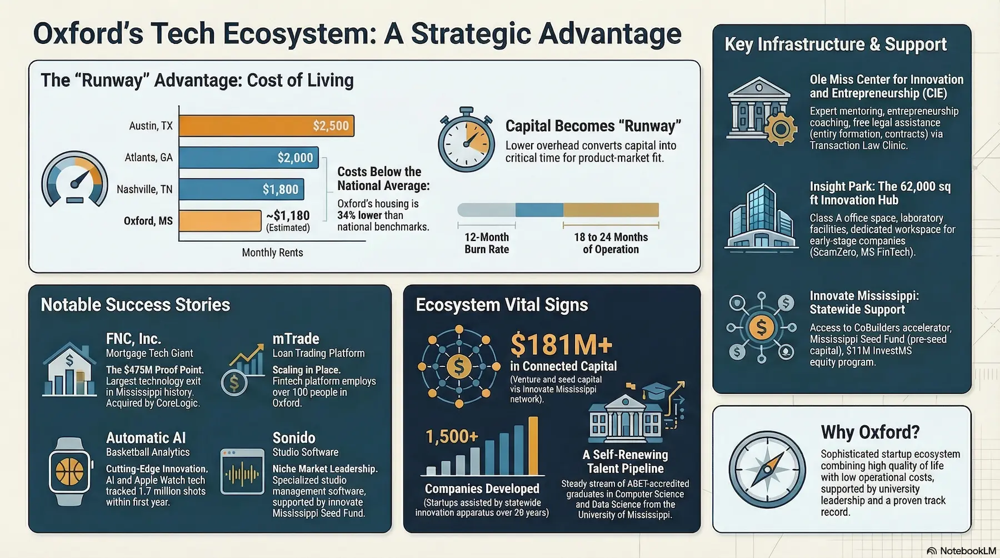

On a weekday morning on The Square in Oxford, Mississippi, you are more likely to run into a software developer debating product roadmaps over a cortado than a retiree lingering over the newspaper. That shift — subtle but unmistakable — is not accidental. Over the past decade, Oxford has quietly assembled the building blocks of a genuine technology startup ecosystem, one anchored by the University of Mississippi and quietly catalyzed by a network of institutions, funding programs, and a handful of high-profile exits that have fundamentally changed what people think is possible in a city of fewer than 30,000 people. The question is no longer whether Oxford has a startup scene. The question is whether it is ready to be recognized — and whether founders from Nashville, Atlanta, and Austin are missing an obvious opportunity by overlooking it.
Why Oxford? The Cost Argument No One Is Making Loudly Enough
Any honest comparison between Oxford and the Sun Belt's most celebrated startup cities has to begin with the math. In Nashville, a one-bedroom apartment in a walkable neighborhood runs well over $1,800 per month. In Atlanta's Midtown or Buckhead, comparable units push past $2,000. Austin, which spent a decade billing itself as the affordable alternative to San Francisco, now sees median rents for a one-bedroom hovering around $2,500 in desirable zip codes. Oxford's cost of living runs roughly 12 percent below the national average, and housing costs sit about 34 percent below the national benchmark — meaning a founder can secure a two-bedroom apartment and still have capital left over that, in Nashville or Atlanta, would have gone entirely to rent.
That arithmetic matters more than it is usually given credit for. For a pre-revenue startup operating on a seed round or angel funding, the difference between burning $3,500 a month on office space and salaries in Atlanta versus $1,800 in Oxford is not a lifestyle preference — it is runway. It is the difference between 12 months of operation and 18 or 24. For founders who understand that the greatest startup killer is not bad product-market fit but running out of cash before finding it, Oxford's cost structure is a genuine strategic advantage.
Bill Rayburn, the Ole Miss finance professor turned serial entrepreneur who co-founded FNC and later launched mTrade — both Oxford-based companies — has made this argument bluntly for years. When people suggested he would need to relocate to grow a real technology company, he stayed in Oxford anyway. His reasoning was straightforward: the talent is here, the cost is manageable, and the quality of life — good schools, a vibrant Square, proximity to Memphis — is something that larger cities cannot replicate at this price point. He has even publicly floated Oxford as a natural hub for financial technology specifically, arguing that the city could own a niche rather than compete broadly against entrenched ecosystems it will never match in scale.
The Ole Miss Engine: What the University Actually Provides
No serious analysis of Oxford's startup potential can ignore the University of Mississippi, which enrolls roughly 22,000 students and sits at the physical and cultural center of the city. Ole Miss is not simply a source of young talent — it is an active participant in the region's entrepreneurial infrastructure in ways that are often undersold.
The Center for Innovation and Entrepreneurship (CIE) at Ole Miss is the formal institutional home of that effort. Based in Holman Hall, the CIE runs mentoring programs, connects student founders with experienced entrepreneurship coaches, and coordinates with the university's Transaction Law Clinic — which provides free legal assistance to students on entity formation, contracts, and partnership agreements. For a student launching their first company, having access to a law clinic that can help draft an LLC operating agreement without charging $400 an hour is a meaningful resource that founders in larger cities typically have to fund themselves.
The university's Insight Park is another structural asset. The Innovation Hub at Insight Park is a 62,000-square-foot facility offering Class A office space, wet and dry laboratory facilities, and shared workspaces designed specifically for early-stage companies. The most recent cohort of tenants — which includes ScamZero, a cybersecurity startup focused on online fraud prevention, and MS FinTech, a financial technology payments company — reflects the breadth of what Ole Miss is attempting to attract and retain in the Oxford market. Companies at Insight Park gain access not only to physical space but to the research partnerships, internship pipelines, and faculty connections that the university provides.
The Lott Leadership Institute, though focused primarily on leadership development more broadly, represents another dimension of Ole Miss's investment in cultivating the kind of management thinking that sustains ventures beyond their founding moment. And the Mississippi Small Business Development Center — whose state headquarters sits on the Ole Miss campus — provides free consulting, coaching, and training to entrepreneurs regardless of whether they are affiliated with the university, extending the institution's reach into the broader Oxford business community.
Innovate Mississippi: The Statewide Network With an Oxford Footprint
Oxford does not operate in isolation. The infrastructure that supports tech startups in the city is meaningfully connected to a statewide apparatus led by Innovate Mississippi, a nonprofit organization that has, over 26 years, helped develop more than 1,500 companies and connected Mississippi founders to over $181 million in seed and venture capital.
Innovate Mississippi's CoBuilders program — a 12-week intensive accelerator for technology and innovation companies — has an Oxford node as one of its eight regional qualifying competitions. Oxford-area startups that win or place in the local pitch competition advance to the statewide CoBuilders cohort, which culminates in a Pitch Day at Innovate Mississippi's annual Accelerate conference. In 2025, Automatic AI — an Oxford-based startup founded by Julien Bourgeois and Andrew Bradford that uses AI on Apple Watch to provide real-time basketball training analytics — won the Oxford regional competition and advanced to the statewide accelerator. The company had already captured 7,000 monthly users and tracked 1.7 million shot attempts since its January 2024 launch, a trajectory that speaks to the quality of companies the Oxford ecosystem is now producing.
Beyond the accelerator, Innovate Mississippi administers the Mississippi Seed Fund, which provides pre-seed and seed-stage funding to high-tech startups through proof-of-concept awards and early-stage risk capital. Oxford-based Sonido, a client management software company for recording studios, received a Seed Fund award while working with Innovate Mississippi on its launch. The fund represents a structural solution to one of the chronic problems that plagues startup ecosystems in non-coastal cities: the absence of early-stage capital at the moment founders need it most, before they have enough traction to attract conventional venture investment.
InvestMS, also administered by Innovate Mississippi with $11 million allocated under Mississippi's SSBCI 2.0 program, provides equity investment to pre-seed through Series A companies — with individual investments possible up to $3 million with appropriate co-investment matching. For Oxford startups with institutional ambitions, the existence of this program means that the absence of a local VC firm does not automatically foreclose access to growth capital.

Oxford's startup ecosystem at a glance — from cost advantages over Nashville and Atlanta to the institutions and companies anchoring the city's tech ambitions.
The Startups That Have Already Proved It Can Be Done
The strongest argument for Oxford's potential is not a projection — it is a track record. The city's most important proof point is FNC, Inc., a mortgage technology company founded in the mid-1990s by Ole Miss finance professors Bill Rayburn and Dennis Tosh. What started as a faculty side project to solve a genuine problem in mortgage collateral management grew into a company whose platforms were embedded in the workflow systems of 18 of the 20 largest U.S. banks and connected to roughly 80,000 appraisal, title, and inspection vendors. When CoreLogic acquired FNC in 2016 for approximately $475 million, it was the largest technology company sale in Mississippi's history — and it produced 45 millionaires from the investors and employees who had stuck with the company through its growth.
That exit did something beyond creating personal wealth. It demonstrated, in a way that no amount of boosterism could replicate, that a company built in Oxford, funded by Mississippi investors, and staffed with Mississippi talent could reach national scale in a major industry. It also created a generation of experienced founders, operators, and investors who remained in the state — and who, in the case of Rayburn, immediately launched another company and began advocating publicly for Oxford's startup potential.
mTrade, Rayburn's follow-on venture, is that next chapter. The company builds software that streamlines the trading of residential whole loans between banks and financial institutions, an enormous market that Rayburn has characterized as one of the largest in the world. Operating from Oxford with over 100 employees, more than 80 of whom are based in Mississippi, mTrade is a live demonstration that the FNC story was not a one-time event. Meanwhile, Sonido's recording studio management software, Fluoriq's non-invasive medical testing technology, and Automatic AI's sports analytics platform all represent the next layer of companies building in Oxford today — companies that are smaller and earlier but operating in an ecosystem that is meaningfully better resourced than it was when FNC was started.
Notable Companies From Oxford's Tech Ecosystem
- FNC, Inc. — Mortgage collateral technology founded by Ole Miss professors; acquired by CoreLogic for ~$475 million in 2016. The largest tech exit in Mississippi history.
- mTrade — Oxford-based fintech platform for residential whole loan trading, founded by FNC co-founder Bill Rayburn; 100+ employees, majority based in Mississippi.
- Automatic AI — AI-powered basketball training analytics via Apple Watch; 2025 Oxford CoBuilders pitch winner; 7,000+ monthly users since January 2024.
- Sonido — Client management software for recording studios; Oxford-based, supported by Innovate Mississippi Seed Fund.
- ScamZero — Cybersecurity startup focused on digital fraud and identity theft; tenant at Ole Miss Insight Park Innovation Hub.
- MS FinTech — Financial technology company developing digital payment tools; Insight Park tenant, partnering with Ole Miss business and engineering schools.
- Fluoriq LLC — Non-invasive endocannabinoid testing technology; 2025 Oxford CoBuilders second-place finisher.
The Talent Pipeline: Ole Miss's Engineering and Tech Output
Startup ecosystems are ultimately built on people. A city with a low cost of living and good accelerator programs but no technical talent produces very little. Oxford's advantage here is structural and self-renewing: the University of Mississippi graduates students in computer science, computer engineering, electrical engineering, and data science every year, creating a continuous supply of early-career technical talent. The School of Engineering at Ole Miss is ABET-accredited, offers undergraduate and graduate programs in computer science and computer engineering, and explicitly trains students with the capacity for entrepreneurship among its stated program goals.
The problem that Mississippi's tech leaders identify — and that Innovate Mississippi CEO Tony Jeff and others have discussed publicly — is not the absence of talent but its retention. Mississippi's universities, including Ole Miss, graduate capable engineers and developers who too frequently leave for coastal cities where established tech employers are concentrated. The catch-22 is well understood: startups leave because they cannot find local talent; graduates leave because they cannot find local tech companies. Neither stays long enough to resolve the mismatch.
Oxford is better positioned than most Mississippi cities to break this cycle, precisely because the presence of a significant and growing startup ecosystem — including mTrade, which directly employs Ole Miss-adjacent talent, and the Innovation Hub at Insight Park, which incubates companies that create internship and full-time opportunities for students — creates actual retention mechanisms. A computer science graduate who can walk from graduation to an internship at a cybersecurity startup at Insight Park, or who joins mTrade's engineering team without relocating, is a graduate who stays. Each company that succeeds in Oxford makes the next recruitment conversation a little easier for the one after it.
The Real Challenges Oxford Has Not Solved
An honest assessment requires acknowledging what Oxford's ecosystem cannot yet claim. The city has no established venture capital firm — founders who need Series A and beyond must look outside the state, which means building relationships at a distance with investors who have no intrinsic reason to know Oxford's market. Innovate Mississippi's InvestMS program helps at early stages, but it cannot substitute for a mature VC ecosystem of the kind that Nashville has begun to develop or that Atlanta has maintained for decades.
The brain drain problem, while improving at the margins, has not been solved. Oxford's quality of life is genuinely excellent for those who stay, but Mississippi's reputation — fair or not — on broader quality-of-life metrics affects recruiting from outside the state, which is ultimately necessary for any ecosystem that wants to grow beyond its local talent pool. And while the city's proximity to Memphis is often cited as an asset, it cuts both ways: Memphis is close enough that the best Oxford talent has an easy alternative, and Memphis's own ecosystem absorbs some of the potential that might otherwise stay rooted in Oxford.
The scale question is also real. Nashville's tech ecosystem generates billions in annual economic activity. Atlanta's is larger still. Oxford's, by any honest measure, is a fraction of either. The city is not competing with those markets in absolute terms — it is competing for the founders who are willing to trade scale for sustainability, speed of iteration, and the kind of quality of life that a walkable Southern college town with an active arts and food scene uniquely provides.
Verdict: Is Oxford Ready to Be Mississippi's Tech Capital?
The case for Oxford as Mississippi's most compelling location for tech startups is not primarily about what it might become — it is about what it already is. It has produced the state's largest tech exit. It has an active accelerator pipeline connected to statewide funding. It has a university that is both a talent factory and an active infrastructure provider for early-stage companies. It has coworking spaces, a law clinic for startups, a seed fund, and a community of founders who have built companies here and stayed. That is more than most cities of its size can say, and it is considerably more than Oxford could claim a decade ago.
What Oxford lacks is the recognition that its track record has earned. It competes not only against Nashville and Atlanta but against its own reputation as a college football town and literary city — a reputation that is richly deserved but that obscures the quieter, less photogenic story of engineers building mortgage software and AI sports analytics platforms in buildings a short walk from William Faulkner's home. That story is getting harder to ignore. The FNC exit happened. mTrade is real. Automatic AI is shipping product. The ecosystem is not imaginary — it is just underreported.
For a founder who is willing to do the math and look past the narrative, Oxford offers something that Nashville and Atlanta genuinely cannot: the chance to build a company with better runway, access to university talent and infrastructure, and a support network that has proven it can produce eight- and nine-figure outcomes — at a cost that leaves room for the mistakes that every startup makes. That is not a small offer. In a startup ecosystem, it might be exactly the right one.